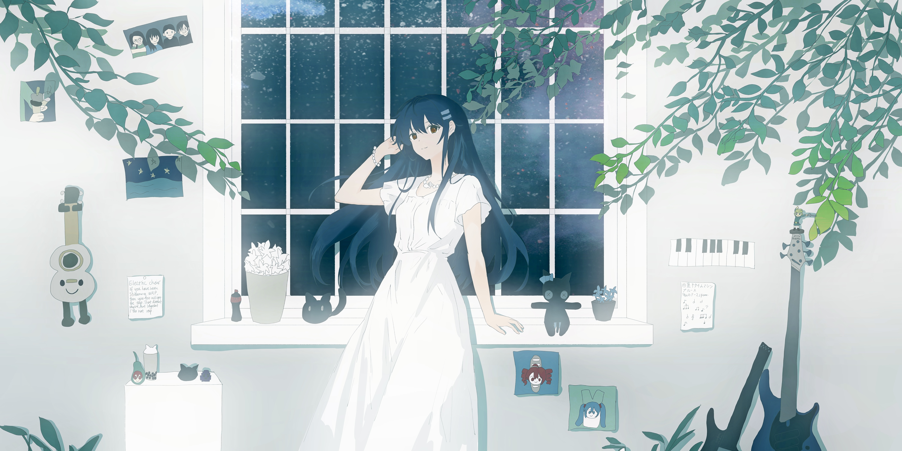

春日和煦

Art by HazezZ
作品介绍
《春日和煦》停留在春天淡绿与透明蓝色空气里的世界。
记录的是我在大学的第二个春天里，对某位极其美好之人的静静凝望，不是炽烈的情绪，而是被微风轻托着的细小瞬间。
具象的，Meadows旁街道、主图二楼的角落、风的声音、光的粒子，他喜欢爵士却不喜欢爵士里有电吉他，
这首歌承载着我生命里那个第二次春天的感受。
不仅是季节的重新到来，也是情绪的重启。
在那段时间里，陪伴在我身边，以一种轻柔、不言破的方式，让普通的日子突然拥有意义。
部分旋律与情绪意象向 Persona 3 的《キミの記憶（Memories of You）》致敬，那是他推荐给我的歌。
那一年的春天，我几乎每天都在听 Persona 3 的track，最后竟然在我的年终统计中排到了第一名（对不起小说家）。
音乐上，《春日和煦》刻意靠近日系摇滚，
轻盈、透明、带一点点前卫核的锐度。
春天的犹豫、坚定、光与沉默。
他给予我一种极其温暖的存在感，
包容、关心、理解、尊重。
是一种让人能够停止逼迫自己、重新呼吸的温度。
这首歌对我而言，是一个全新的开始（也是用strandberg boden metal nx7录的第一首歌）。
这是我第一次完全脱离《Ipomoea alba》的世界，写出真正属于春天的歌。
无论在现实的季节里，还是情绪的轨迹里，它都是一次晴朗的重生。
春天尽头里那阵让人迷茫又安心的微风。
IV–iii · G#m7b5 → Gmaj7
旋律吉他、叠加钢琴与延伸和声
4/4 · 3/4 · 2/4
D major → C# major
完整制作与编曲说明
这首歌应该算是我相对比较少有的从一开始就想写得很轻快的歌，当然还是没能完全忍住往里面塞一些前卫核的东西（笑）。
Intro & Main Riff
开头没有直接进入乐队编制，而是用了一种听起来比较 jolly、带一点敲击质感的键盘音色，配了一些响指之类的小 percussion。那段时间听了太多 Persona 3 的东西，所以也很想尝试一下这种比较有日常感的音乐。
Main riff 的根音其实很简单，就是 D major 里的 IV–iii，G 和 F#m 来回走。但节奏吉他并不是一直在扫同一个和弦，比如在 G 上一直保留着根音和 9，剩下的音则在大三度，以及 5 和 maj7 之间切换，基本上每几个十六分音符就会换一次 voicing。到了 F# 上也用了类似的节奏去切换 11 和 5。
我很喜欢在失真吉他上这样拆开来弹一个和弦，不一定要在每一次扫弦的时候都把所有想要的音弹出来，反正钢琴和其他吉他也会补上其中的一些东西。
Main riff 上面的主奏吉他在 G 和 F# 上基本是一样的旋律，但 C#、D、E、A 这些音相对于根音的关系已经变了。尤其是 C# 在 G 上是 Lydian 的 #11，到了 F# 上又变成了很稳定的 5。
钢琴在 F# 上也有一点比较有意思的东西，左手在建立 F#m7，右手却一直有 D、A、C# 这些音，所以有时候听起来又很像 Dmaj7/F#。我还挺喜欢这种明明下面走的是一个小和弦，上面却仍然有主和弦的影子的感觉。
Verse
主歌就还是忍不住写了一些比较前卫核的东西。这里的根音是 G#–G–F#–B，前三个音连续往下走了两个半音。
第一轮主要靠低音 riff 和人声来交代和声，贝斯在 G# 上还会弹到 D。第二轮钢琴进来之后才比较完整地弹出了 G#–B–D–F#，也就是一个 G#m7b5。
现在回头看，这里 G#m7b5 到 Gmaj7 的连接其实挺有意思的，B、D、F# 三个音都可以不动，只要把根音往下移一个半音，就从半减七变成了大七和弦。而且前一个和弦也刚好是 D Lydian 里的升四级半减七。
这里并没有按照半减七在传统功能和声里的用法去解决，就只是很自然地往下走到了 G，再到 F#m。我自己很喜欢这种根音变动很小，但整个和弦性质突然发生变化的东西。
Pre-chorus
进入副歌前把重型的部分拿掉了，清音吉他的 voicing 还是保留了不少大七度、九度和十三度。到了 D 的时候也没有直接弹一个普通的大三和弦，而是保留了上面的 G，也就是 11，最后一拍还短暂地经过了一个 C#dim。
这里另外两条人声也开始在主旋律上面留一些比较长的音，不完全是跟着主旋律走的和声，更像是在背景里继续补充一些和弦的声音。
Chorus
副歌的和声骨架相对比较正常，基本上是 G–F#m–A–Em–D，但是钢琴和贝斯并不总是在同一个时候换和弦。
比如下面的贝斯已经从 F# 走到 A 的时候，钢琴左手还在弹前一个以 F# 为基础的 voicing。但里面的 F#、A、C# 放到 A 上又刚好是 13、1 和 3，所以也不用急着把钢琴里的音全部换掉。
副歌第一轮的钢琴左手是把和弦音一个个叠上去的，从根音开始，慢慢把三度、五度、大七度和九度放进去。我一直挺喜欢这种和弦不是在一个瞬间就全部出现，而是在时间里慢慢形成的感觉。
人声里面也有一个比较短的调外音 F natural，是在 F# 中间突然往下走半音再回来。下面的 G 还保留着 maj7 的色彩，所以这里稍微有一点小七度和大七度之间的摩擦。虽然只是很短的一个音，但是每次副歌都把它留了下来。
第二轮副歌里钢琴开始一直弹十六分音符，前四小节主要是 D–E–F#–A，单独拿出来看其实就是 Dadd9 的四个构成音。但下面分别是 G、F#m 和 A，所以同一个音型里的音一直在改变它们的和声功能。
到了 Em 上，F# 换成了 B，最后在 D 上又换成 C#，D、E、A 则基本一直保留着。比起每换一个和弦就重新写一套钢琴音型，我很喜欢让原本的东西稍微变动几个音之后继续走下去。
这里鼓也从第一轮比较 half-time 的感觉变回了正常的 backbeat，虽然 BPM 一直没有变化，但钢琴和鼓都让整个副歌突然快了一倍似的。
Interlude
应该是整首歌我自己很喜欢的一段器乐，虽然说好要写一首比较正常的日摇，但最后还是写了一段 3/4、3/4、3/4、4/4 的东西（笑）。
每四小节刚好是 13 拍，前面三个和弦分别只有三拍，最后回到 G 的时候才多留一拍。下面的贝斯基本都在弹很规整的四分音符，两条清音吉他一条负责持续的和弦，另一条负责八分音符的分解和弦，钢琴则一直在上面跑自己的十六分音符旋律。
这里的钢琴有不少 C# 和 D 之间的半音运动，还有一些跨八度的跳跃。第二轮的时候也没有完全重复第一轮，而是稍微换了一下开头和结束的几个音，中间比较有辨识度的东西还是保留了下来。
其中 A 上的和声我也挺喜欢，一条清音在弹 A、E、G，另一条则是 A、D、F#，钢琴里又有 C#。所以虽然下面是一个 A7，上面却一直会出现 11 和 13，三度和四度也会在不同乐器里同时出现。单独听每一条轨道的时候其实都没有那么复杂。
后八小节又在原来的钢琴旋律上面加了两条比较长的旋律线，让三个拍子的东西继续跑下去，但上面开始有一个相对缓慢的旋律。
最后接回副歌的地方还有一个 2/4，相当于在这么多轮混合拍之后又突然少了两拍，把原来的器乐段落直接收掉。
Final Chorus & Outro
最后的副歌结束之后又回到了最开始的 main riff。
不过最后八小节没有继续停在原来的 D major，而是把整个 main riff 往下降了半音，变成 C# major（或者 Db major，七个升号的谱子确实不怎么好看）。
有意思的是，转调之前最后一个和弦的根音是 F#，转调之后第一个和弦的根音也刚好是 F#，只是从原来的小和弦变成了大和弦，原来 D major 里的 iii 变成了新调里的 IV。
钢琴、主奏吉他、节奏吉他和贝斯的核心材料都跟着往下移了半音，所以还是开头那个熟悉的 main riff，只不过所有的音都已经不在原来的位置了。这里又加进了之前没有的人声旋律，最后仍然停在三级的小和声上，没有再回到主和弦。
比起在最后升调去制造一个更强烈的高潮，我还挺喜欢这里往下降半音的感觉。同一个东西明明又出现了一遍，却已经不是最开始的那个样子了。
在春天尽头里。
歌词（Part 1）
在这里的第二个春天
因为是你 街道才拥有了意义
垂下的发丝掩住了笑意
而我的目光只是跟随着你
微风点缀的日子
你的笑容 闪烁在阳光中飘散
明知徒然却重复的日常
连夏天都失去了期待理由
光 洒在耳尖
泛红颜色
映在眼中
明 天该怎样
该仍让你
笑出来吗
在奋力追赶犹豫 与坚定的春日里
你确确实实的陪伴在我身旁
在有限的时刻里却沉默不语
但只是没来由的想看着你
你给予我那不用为了寻找价值
而迷失于这本身的方式里
义无反顾踏向不可见的未来
下次还是约在二楼角落见吧
歌词（Part 2）
你轻声哼唱着的阴天
棉花糖里 巧克力味却轻飘飘
寂寥无声中的那段话
或许比想象的还更加的糟糕
我们之间也变了呢
想要说出的话却总是找不到
风的声音、光的粒子
下午的你喜欢的旋律
“要怎么倒退时间？”用着温柔的声音
睡着的淡淡绿色 渐渐等待着黎明
我的梦层层跌入 阳光之后的草坪
却是你不喜欢的 爵士吉他 的声音
「時間を、どうやって巻き戻せばいいの…？」
優しく、あの日と同じ声で。
眠ったままの淡い緑が
静かに、夜明けを待っている。
夢は、何層も重なって
光の向こうの芝生へ落ちていく。
耳に残るのは
君が嫌いだった
あのジャズギターの音だけ。
在我早已知晓的 会结束的春日里
仍在寻找着话语背后的意义
见到你后却竟是平凡的话语
明明不愿它沦为普通定义
你给予我那不用为了寻找价值
而迷失于这本身的方式里
走过无数次熟悉的十字路口
仿佛将快看不见你静静伫立
不知为何但却闪闪发光的声音
在春天尽头里